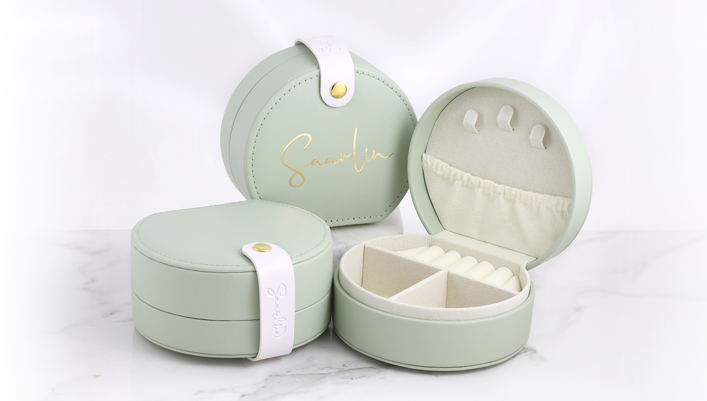
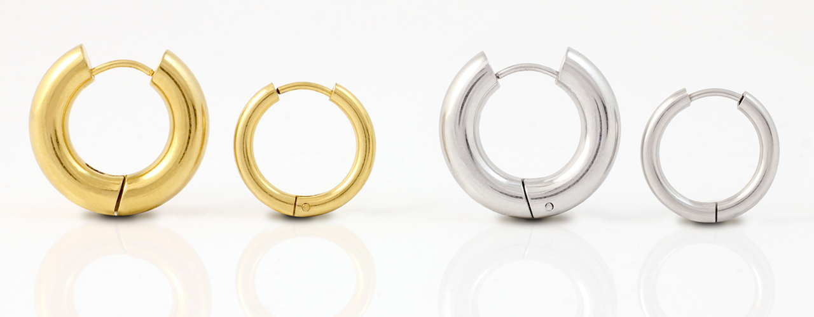

About
Saarlin is a jewellery company founded by my friend Saara and me. The name Saarlin comes from combining our names.
Saarlin offers jewellery made with materials such as genuine semi-precious stones, freshwater pearls, cubic zirconia and allergy-friendly stainless steel.
The photograph above was taken by me, Linda.

Why Saarlin?
Saarlin has more than 800 products across over 30 product series, with a wide range of sizes and adjustable options and have been operating since 2021.
The photograph above was also taken by me, Linda.